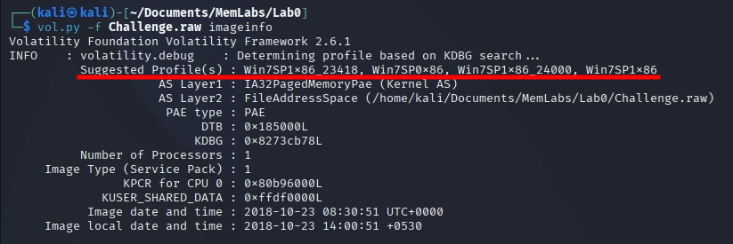
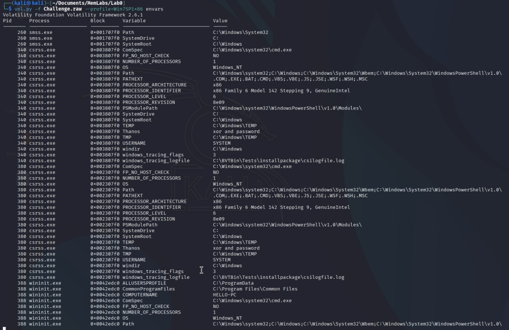
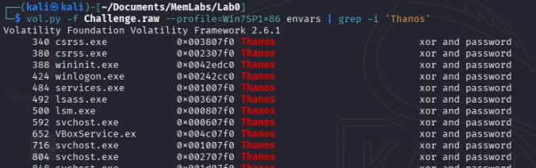
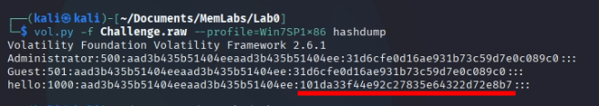
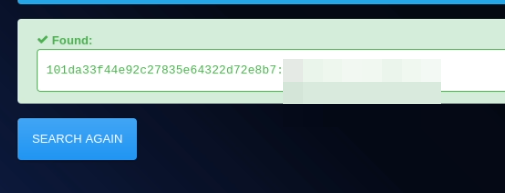
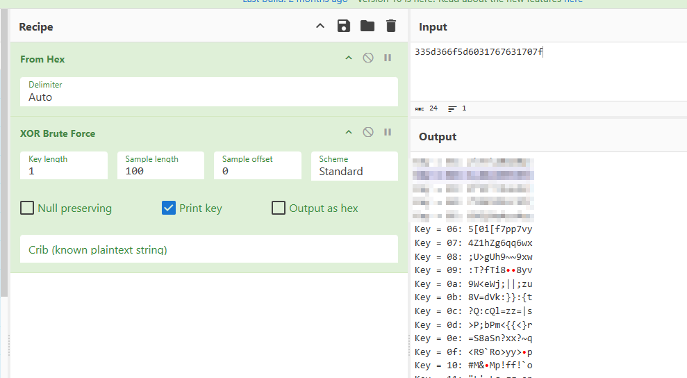

En este write-up, me adentro en los retos de MemLabs, una serie de laboratorios diseñados para poner a prueba nuestras habilidades en el análisis de volcados de memoria. Equipado con Volatility, una de las herramientas más potentes para diseccionar sistemas vivos o caídos, iré desenterrando credenciales, procesos sospechosos, conexiones de red y cualquier pista que hayan dejado atrás.
Este primer reto MemLabs Lab 0 - Never Too Late Mister, se trata de un desafío introductorio, empezaremos con cosas muy simplonas y acabaremos con puzzles más complejos
No me enrollo más y voy a empezar con la resolución del desafio:
Mi amigo John es un activista "ambiental"(traducción de "environmental") y un humanitario. Detestaba la ideología de Thanos en Avengers: Infinity War. Es un desastre programando: usaba demasiadas variables en cualquier programa que escribía. Un día, John me entregó un volcado de memoria y me pidió que averiguara qué estaba haciendo en el momento en que lo generó. ¿Puedes descubrirlo por mí?
Lo primero que tenemos que hacer cuando estamos analizando un archivo de memoria, es buscar el perfil de la memoria. Para entendernos, el perfil es como está estructurada la memoria RAM o el idioma en el que está escrita.
Para sacar la memoria debemos usar el siguiente comando:
vol.py -f Challenge.raw imageinfo
Al hacer esto, y esperar un poco, la herramienta nos devolverá el siguiente resultado:
La herramienta nos ha devulto varios perfiles de memoria que podrían ser el correcto.
Yo siempre suelo comprobar todos los perfiles y todos me dan el mismo resultado, lo mejor es apuntarlos en un bloc de notas
y cuando falle probar con otra
En el enunciado podemos encontrar varias pistas de donde tenemos que mirar para sacar las "flags":
Con esto en mente, podemos empezar a buscar.
Empezaré buscando en las variables de entorno con el siguiente comando:
vol.py -f Challenge.raw --profile=Win7SP1x86 envars

Evidentemente, no podemos ver nada aquí porque la herramienta nos está dando todas las variables del sistema cargadas en la memoria.
Debemos filtrar el resultado, por ejemplo con la palabra "Thanos":
xor + contraseña, ¿Qué significará?
Lo único que se me ocurre, es descifrar la contraseña hasheada del usuario. Para ello usamos el siguiente comando:
vol.py -f Challenge.raw --profile=Win7SP1x86 hashdump

Ahora debemos descifrar la parte señalada con alguna herramienta, yo usaré la herramienta online hashes.com
Genial, solo nos queda la segunda parte de la flag para terminar el reto.
El enunciado nos pedía ver que estaba haciendo John mientras generaba el volcado de la memoria. Esto lo podemos hacer con:
Nada raro
Creo que tampoco hay nada raro
Encontramos la ejecución de un script de python que devolvió un resultado
Prabablemente, este resultado sea la segunda parte de la flag, probemos a descifrarlo con cyberchef:
Y ahí tenemos la segunda y última parte de la flag, acabando así con la introducción a los MemLabs
Ahora podemos avanzar a los retos principales, donde se encuentran los desafíos más interesantes y complejos.
Ir al siguiente laboratorio